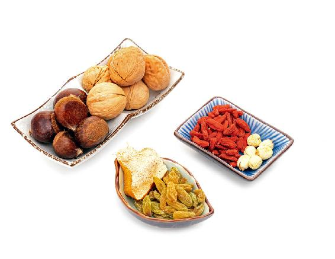
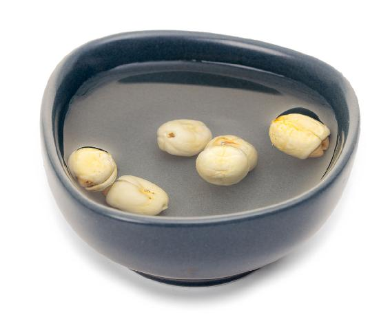
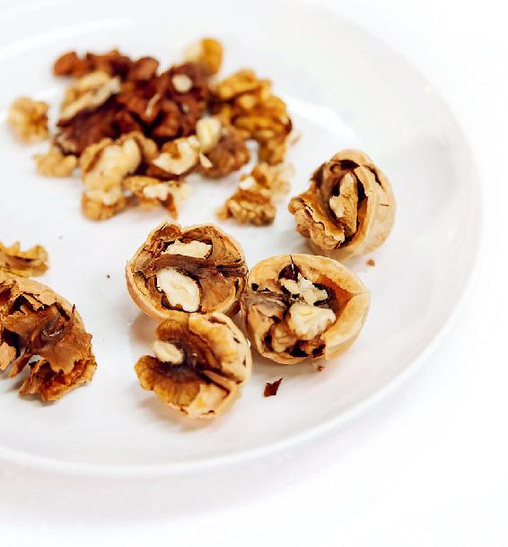
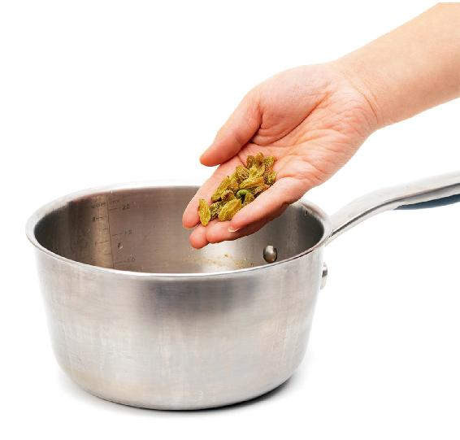
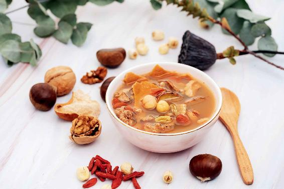
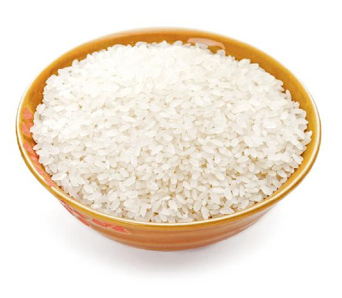

大雪节气养生的第二个原则——大补。所谓大补，是要五脏同补，但是有侧重，重点是要大补心和肾，因为心和肾在五脏六腑中是最能受补的。有的脏腑，您不能随意给它大补，怕补过头了，比如，肝补过头了，就会伤肝。但是心和肾能经得起大补。
如果把大雪节气所管的这一个月再细分一下，前半个月主要是大补肾，重点是补肾精；后半个月，也就是冬至节气，主要是大补心，重点是养心阳。
所以大补养藏汤，您可以喝整整一个月，特别是前半个月，您可以天天喝它。
自从我公布了大补养藏汤的配方之后，这些年很多朋友一到大雪节气都会做大补养藏汤来喝。他们都很积极，每年都会早早地把原料给备好。大雪节气的大补养藏汤，是小雪节气的补肾养藏汤的升级版。为什么叫大补养藏汤？因为到了大雪节气，我们就可以全面地大补了。
大补养藏汤

原料：栗子6个，核桃6个，莲子6个，枸杞1把，葡萄干1把，陈皮1/4 ~ 1/2（根据大小来定）。

做法：
1.把莲子提前一两小时用水泡上。栗子剥去外壳，要留下它那毛茸茸的内皮，最好是切成两半，便于入味。

2.核桃剥去外壳，把核桃仁掰开。

3.所有的原料一起下锅，加水煮开，再煮上20～40分钟，看汤已经变得发白，有一点浓浓的感觉就可以起锅了。（煮到这个时候，栗子的内皮已经和栗子仁分离了，把栗子内皮用筷子夹出来扔掉，这个不需要吃，因为栗子内皮的营养都溶解到汤里了。）
功效：
这道汤可以补五脏，心、肝、脾、肺、肾都能补到。特别是补肾，它补得非常全面，既补肾气，又补肾精，同时还补肾阴和肾阳。男女老少都可以喝。
允斌叮嘱：
1.如果小孩子喝这道汤，他可能会觉得有一点涩，您可以加一点点糖来调味，最好加麦芽糖。因为麦芽糖是最补小孩子的糖，小孩子吃了麦芽糖后，既健脾开胃，还可以防止蛀牙。
2.汤里所有的汤料都是可以吃掉的。有的人可能会觉得陈皮有一些苦辣，那您可以不吃。
孕妇（怀孕三个月以内）也可以喝大补养藏汤。因为核桃仁有一点活血的作用，您可以少放一点儿，同时还要把核桃仁的皮去掉，这样比较保险。
女性生理期喝这道汤，可以把枸杞去掉。如果您是血特别瘀那种类型的人，要把栗子的内皮也去掉，再多放点核桃仁，这样能避免痛经。
首先，要分一下是小孩儿还是大人。
如果是小孩儿感冒、咳嗽，一般都是由积食引起的，暂时先不给他进补，不要喝这道汤，其他的补汤也都不要喝。
如果是大人感冒，在咳嗽、痰多的情况下也不要喝，因为这时候进补，痰会更多，如果只是干咳，那是可以喝的。不过，最好是在汤里再多加一点儿陈皮，因为陈皮有止咳、化痰的效果。

有位读者问我，能不能在大补养藏汤里加点大米熬成粥来喝？
其实，在这道汤中加大米或者小米来煮粥都是可以的，只是它们的功效有一点点区别，大米是补气的，补的是脾胃之气；小米是养阴的，养的主要是胃阴和肾阴。所以，您可以根据自己身体的需要，来选择加哪一种米。或者将各种应时的杂粮搭配一起煮，功效更全面一些。

在这道汤里加葡萄干也是可以的，因为葡萄干也是补肾的，还可以补气血，调理筋骨的疼痛。另外，葡萄干还有健脾、开胃的作用，小孩消化不良、老年人脾胃虚弱，都可以吃一点儿葡萄干。
吃葡萄干跟吃葡萄又有一点不同，葡萄皮含有白藜芦醇，它有抗衰老的作用，但人在吃葡萄的时候，一般都是选择吃果肉，而不吃葡萄皮。可葡萄干不是这样，它带着皮，吃起来酸酸甜甜的，非常好吃。如果汤里放葡萄干，就可以利用葡萄的完整功效，不仅补肾，还可以消肿。
如果家里有慢性肾炎的朋友，我建议平时可以多吃一点葡萄干，对于慢性肾炎引起的水肿是很有帮助的。
孕妇吃葡萄干也很好，可以安胎养血，还能缓解孕吐，所以这道汤对于孕妇来说也很适合。怀孕三个月以内的女性，因胎象可能还不是很稳定，谨慎起见，您可以把方子中的核桃去掉，或者是咨询一下医生。这个方子中的原料都是常见的食材，都很安全，所以您在喝的时候，完全可以根据自己的体质和自己的身体状况来进行加减搭配。
一年中，我们的身体最经得起补的就是仲冬这一个月，如果这一个月补好了，到了明年开春的时候，您整个人就会感到焕然一新。
读者评论：喝了五天大补养藏汤，发现头发掉得少了
以学愈愚：大补养藏汤坚持喝了五天，发现头发掉得少了，腰和肚子都热热的，面色好了，身材也好了。
木子梨1：我喝了几天大补养藏汤，意外发现舌头上的齿痕少了很多，基本看不见了，晚上也不怎么起夜了。真心感谢美女老师。
相逢_e1：从小雪节气的补肾养藏汤到大雪节气的大补养藏汤，我一直在喝，最近惊喜地发现头发掉得少了，太高兴了，陈老师的方子真是简单又实用。
姚真_kj：我煮大补养藏汤时陈皮放多了，是我自己晒的陈皮，孩子和爱人不太爱喝，我都喝了，脚后跟疼痛症状明显减轻了，太谢谢老师啦！
春媛_s3：老师，我天天喝大补养藏汤，发现手上的冻疮好了，早上起来手也变得灵活了。
小鹿：从上个月中旬开始，整个人都很燥，加上熬夜工作，每天早晨起来都有好多痰，喝了大补养藏汤竟然很舒服，感觉五脏六腑都被安抚了，整个人平静了很多。
安心一笑：进入小寒节气后，我和五岁的儿子吃了三次红豆糯米饭、两次大补养藏汤之后，儿子在写作业时，我听到他咕咚咕咚地往下咽口水。睡觉时，我发现自己嘴里的津液也多了。这个汤效果真的是很好。
允斌解惑：晚上喝大补养藏汤好不好？
海儿：晚上喝了大补养藏汤，一晚上都没怎么睡，不时醒来。我好像每到节气转换的时候，晚上都睡不好，请问陈老师这是怎么回事呢？
允斌：晚上喝大补的汤容易影响睡眠，换白天喝试一试。
宝儿2014：我们全家都按照老师的提示养生。夏天贴三伏贴，喝黄芪粥；冬天喝大补养藏汤。现在妈妈不那么怕冷了，爸爸的老慢支（慢性支气管炎）也好多了。感恩老师！请问我爸爸脾胃虚弱、痰多，现在每天吃茯苓粉，您有什么更好的方子健脾祛湿吗？
允斌：别忘了陈皮，它是化痰的经典食材。